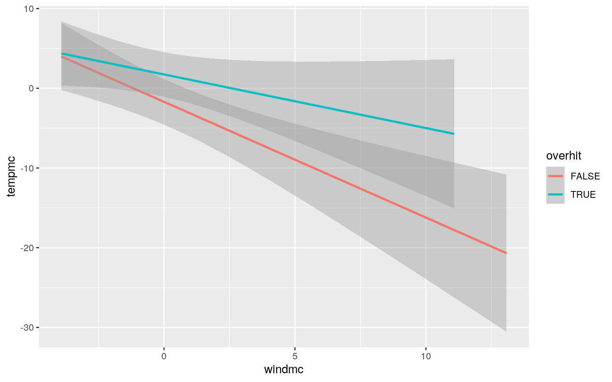
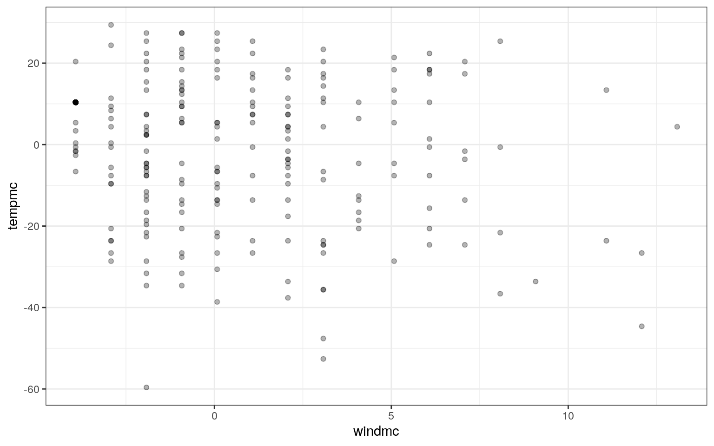
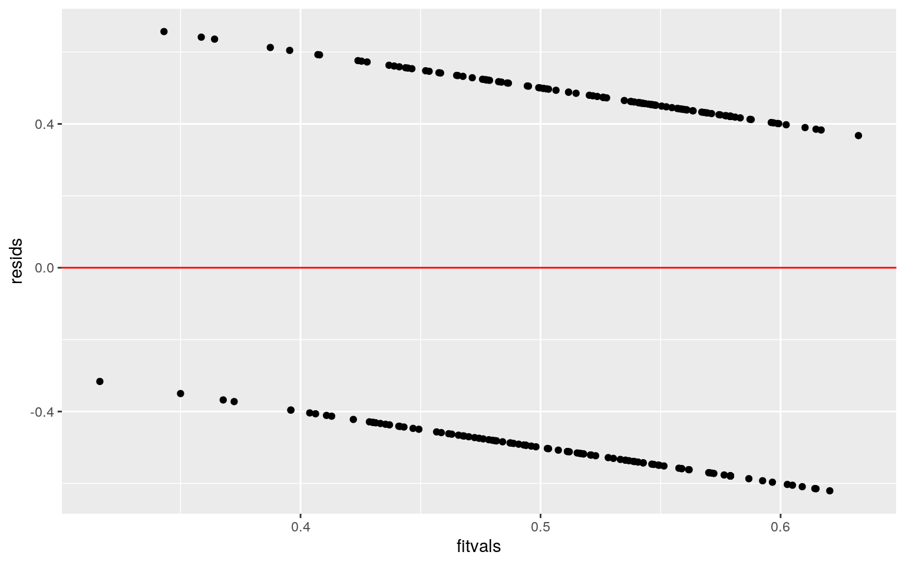
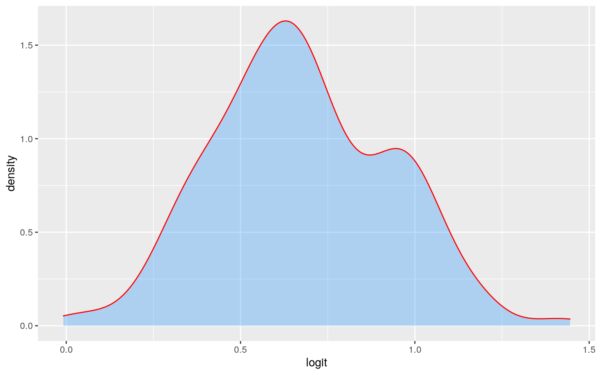
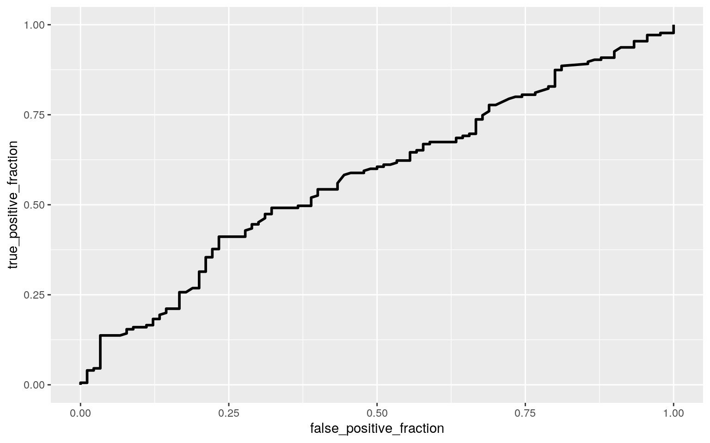

In this project I will be using an NFL betting dataset I found from kaggle. From that dataset I created this one which includes every game from the 2016 season. A little betting terminology knowledge is necessary for understanding this data. The game "spread" is how much a team is expected to win by, the "over/under line" is how many total points are expected to be scored by both teams combined in a game. Lines are set by different sports books, I do not know which one these came from or if they are consensus lines. The response variables I will be using are spreadhit which gives the value "TRUE" when the favored team covers the spread. The other is overhit which will give the value "TRUE" when the teams score more combined points than the over/under line. This dataset also includes weather data of the temperature and wind during the game. I do not know where the weather data came from, and I have to assume it was taken at the start of the game. Generally if the temperature is 72 and the wind is 0 that means the game is being played in an indoor arena. Hopefully through this project, I can find a way to win some bets.
#Data Wrangling
nflbettingdata <- read.csv("nflbettingdata.csv")
nflmutadd <- nflbettingdata %>% mutate(overhit = score_total > over_under_line) %>% mutate(spreadhit = result_favorite > 0) %>% mutate(spread_favorite = spread_favorite * -1)
data1 <- nflmutadd %>% select(result_favorite, spread_favorite, spreadhit, over_under_line, score_total, overhit, weather_temperature, weather_wind_mph)#MANOVA Assumptions
library(rstatix)
group <- data1$overhit
DVs <- data1 %>% select(spread_favorite, over_under_line, weather_temperature, weather_wind_mph)
#Test multivariate normality for each group (null: assumption met)
sapply(split(DVs,group), mshapiro_test)## FALSE TRUE
## statistic 0.9630877 0.898592
## p.value 0.001557134 2.639116e-08#If any p<.05, stop (assumption violated). If not, test homogeneity of covariance matrices
#Box's M test (null: assumption met)
box_m(DVs, group)## # A tibble: 1 x 4
## statistic p.value parameter method
## <dbl> <dbl> <dbl> <chr>
## 1 14.2 0.165 10 Box's M-test for Homogeneity of
Covariance Matrices#Optionally, view covariance matrices for each group
lapply(split(DVs,group), cov)## $`FALSE`
## spread_favorite over_under_line weather_temperature
weather_wind_mph
## spread_favorite 10.1544807 1.066398 -12.86380 0.4288526
## over_under_line 1.0663980 12.886639 2.87036 -2.1140170
## weather_temperature -12.8637983 2.870360 296.52106
-22.1639795
## weather_wind_mph 0.4288526 -2.114017 -22.16398
15.2655918
##
## $`TRUE`
## spread_favorite over_under_line weather_temperature
weather_wind_mph
## spread_favorite 6.9888361 0.292202 -4.581603 0.3207862
## over_under_line 0.2922020 18.055434 10.631552 -3.7288027
## weather_temperature -4.5816033 10.631552 283.402672
-8.5097636
## weather_wind_mph 0.3207862 -3.728803 -8.509764
12.6513361#MANOVA
man1 <- manova(cbind(spread_favorite, over_under_line, weather_temperature, weather_wind_mph)~overhit, data=data1)
summary(man1)## Df Pillai approx F num Df den Df Pr(>F)
## overhit 1 0.018452 1.2313 4 262 0.2979
## Residuals 265#Univariate ANOVAs
summary.aov(man1)## Response spread_favorite :
## Df Sum Sq Mean Sq F value Pr(>F)
## overhit 1 4.66 4.6621 0.5489 0.4594
## Residuals 265 2250.91 8.4940
##
## Response over_under_line :
## Df Sum Sq Mean Sq F value Pr(>F)
## overhit 1 18.7 18.662 1.1965 0.275
## Residuals 265 4133.4 15.598
##
## Response weather_temperature :
## Df Sum Sq Mean Sq F value Pr(>F)
## overhit 1 1058 1058.41 3.6542 0.05701 .
## Residuals 265 76755 289.64
## ---
## Signif. codes: 0 '***' 0.001 '**' 0.01 '*' 0.05 '.' 0.1
' ' 1
##
## Response weather_wind_mph :
## Df Sum Sq Mean Sq F value Pr(>F)
## overhit 1 17.3 17.348 1.2486 0.2648
## Residuals 265 3682.0 13.894#T tests
data1 %>% group_by(overhit) %>% summarize(mean(spread_favorite), mean(over_under_line), mean(weather_temperature), mean(weather_wind_mph))## # A tibble: 2 x 5
## overhit `mean(spread_favorit… `mean(over_under_lin…
`mean(weather_temperatu… `mean(weather_wind_m…
## <lgl> <dbl> <dbl> <dbl> <dbl>
## 1 FALSE 4.81 45.5 59.5 4.19
## 2 TRUE 4.55 46.0 63.5 3.68pairwise.t.test(data1$spread_favorite,data1$overhit, p.adj="none")##
## Pairwise comparisons using t tests with pooled SD
##
## data: data1$spread_favorite and data1$overhit
##
## FALSE
## TRUE 0.46
##
## P value adjustment method: nonepairwise.t.test(data1$over_under_line,data1$overhit, p.adj="none")##
## Pairwise comparisons using t tests with pooled SD
##
## data: data1$over_under_line and data1$overhit
##
## FALSE
## TRUE 0.28
##
## P value adjustment method: nonepairwise.t.test(data1$weather_temperature,data1$overhit, p.adj="none")##
## Pairwise comparisons using t tests with pooled SD
##
## data: data1$weather_temperature and data1$overhit
##
## FALSE
## TRUE 0.057
##
## P value adjustment method: nonepairwise.t.test(data1$weather_wind_mph,data1$overhit, p.adj="none")##
## Pairwise comparisons using t tests with pooled SD
##
## data: data1$weather_wind_mph and data1$overhit
##
## FALSE
## TRUE 0.26
##
## P value adjustment method: none#Probability of type 1 error
1-(.95^6)## [1] 0.2649081.05/6## [1] 0.008333333Using the MANOVA test I was able to see that my explanatory variables (spread_favorite, over_under_line, weather_temperature, weather_wind_mph) did not have a significant effect on my response variable of "overhit". I then used the univariate ANOVA test to see how each variable affected the result from the MANOVA, this showed me that each variable by itself was also insignificant, however weather_temperature was the closest to having any significance and it turns out that spread_favorite was the most insignificant. The t tests and post-hoc tests largely showed the same results as before. I ran 6 tests, using this I can see that the probability of at least one type I error is about 26.5%, and the Bonferroni's adjusted correction is about 0.83%. I can conclude that there is no significant difference in my data before and after adjustment. My data violates the assumption of multivariate normality as both p-values found are less than .05.
#Mean Centering
data_mc <- data1 %>% mutate(windmc = weather_wind_mph-mean(weather_wind_mph, na.rm=T)) %>% mutate(tempmc = weather_temperature-mean(weather_temperature, na.rm=T))
#Linear Regression
fit <- glm(overhit ~ windmc + tempmc, data=data_mc)
summary(fit)##
## Call:
## glm(formula = overhit ~ windmc + tempmc, data = data_mc)
##
## Deviance Residuals:
## Min 1Q Median 3Q Max
## -0.6205 -0.5179 0.4013 0.4546 0.6569
##
## Coefficients:
## Estimate Std. Error t value Pr(>|t|)
## (Intercept) 0.524345 0.030500 17.192 <2e-16 ***
## windmc -0.005733 0.008446 -0.679 0.4979
## tempmc 0.003109 0.001841 1.688 0.0925 .
## ---
## Signif. codes: 0 '***' 0.001 '**' 0.01 '*' 0.05 '.' 0.1
' ' 1
##
## (Dispersion parameter for gaussian family taken to be
0.248377)
##
## Null deviance: 66.592 on 266 degrees of freedom
## Residual deviance: 65.572 on 264 degrees of freedom
## AIC: 390.82
##
## Number of Fisher Scoring iterations: 2#Plot
data_mc %>% ggplot(aes(windmc, tempmc, color=overhit)) + geom_smooth(method="lm")
#Assumptions
ggplot(data_mc, aes(windmc, tempmc)) + geom_point(alpha=.3) + theme_bw()
resids <- fit$residuals
fitvals <- fit$fitted.values
ggplot() + geom_point(aes(fitvals,resids)) + geom_hline(yintercept = 0, color='red')
#Recomputed Regression
library(sandwich); library(lmtest)
coeftest(fit, vcov = vcovHC(fit))[,1:2]## Estimate Std. Error
## (Intercept) 0.524344569 0.030672019
## windmc -0.005732871 0.008393837
## tempmc 0.003108929 0.001874300I built a linear regression model predicting "overhit" from "weather_wind_mph" and "weather_temperature". From the regression we get the intercept coefficient of 0.524 meaning that when wind and temperature are both at their means, we expect overhit to be false 52.4% of the time. The coefficient for windmc means that for every increase in 1 from the mean centered wind variable we expect the intercept to change by -0.0057. The coefficient for tempmc means that for every increase in 1 from the mean centered tempreature variable we expect the intercept to change by 0.003109. When recomputing regression results with robust standard error we see that the standard error for the intercept would be enough to move it across the 50% threshold, and for the windmc coefficient the standard error would be enough to make it positive instead of negative.
resid_resamp <- replicate(5000,{
new_resids<-sample(resids,replace=TRUE)
data_mc$new_y<-fitvals+new_resids
fit2<-lm(new_y~windmc+tempmc,data=data_mc)
coef(fit2)
})
resid_resamp %>% t %>% as.data.frame %>% summarize_all(sd)## (Intercept) windmc tempmc
## 1 0.02980053 0.008363544 0.001831218#Logistic Regression for binary variable
databin <- data1 %>% mutate(y=ifelse(spreadhit=="TRUE",1,0)) %>% na.omit
fit3 <- glm(spreadhit~over_under_line+weather_temperature, data=databin, family='binomial'(link="logit"))
coeftest(fit3)##
## z test of coefficients:
##
## Estimate Std. Error z value Pr(>|z|)
## (Intercept) 3.2206759 1.5583730 2.0667 0.03876 *
## over_under_line -0.0421403 0.0331087 -1.2728 0.20309
## weather_temperature -0.0100237 0.0079324 -1.2636 0.20636
## ---
## Signif. codes: 0 '***' 0.001 '**' 0.01 '*' 0.05 '.' 0.1
' ' 1exp(coef(fit3))## (Intercept) over_under_line weather_temperature
## 25.0450418 0.9587353 0.9900263#Confusion Matrix NOT WORKING
pred <- predict(fit3,type="response")
prob <- ifelse(pred>.5,1,0)
table(predict=as.numeric(pred>.5),truth=databin$spreadhit)%>%addmargins## truth
## predict FALSE TRUE Sum
## 0 0 1 1
## 1 90 174 264
## Sum 90 175 265#Accuracy
174/265## [1] 0.6566038#Sensitivity
0/1## [1] 0#Specificity
174/264## [1] 0.6590909#Precision
0/90## [1] 0#Density Plot
databin$logit<-predict(fit3,type="link")
databin %>% ggplot(aes(logit, color=spreadhit, fill=spreadhit)) + geom_density(alpha=.3, color="red", fill="dodgerblue")
#ROC Curve
library(plotROC)
roc <- ggplot(databin) + geom_roc(aes(d=spreadhit, m=pred), n.cuts=0)
roc
calc_auc(roc)## PANEL group AUC
## 1 1 -1 0.5778095From the logistic regression we can see that the intercept coefficient is significant (finally got one!). This shows that the combination of the variables over_under_line and weather_temp has a significant effect on spreadhit. Neither of these variables alone have a significant effect on the spreadhit however. For about every unit increase in each variable the chance of spreadhit being true increases. For the confusion matrix, we go the following values; Accuracy: 0.6566; Sensitivity: 0; Specificity: 0.659; Precision: 0. The AUC shows us that the area under the curve of the ROC plot is 0.5778.
class_diag <- function(probs,truth){
#CONFUSION MATRIX: CALCULATE ACCURACY, TPR, TNR, PPV
tab<-table(factor(probs>.5,levels=c("FALSE","TRUE")),truth)
acc=sum(diag(tab))/sum(tab)
sens=tab[2,2]/colSums(tab)[2]
spec=tab[1,1]/colSums(tab)[1]
ppv=tab[2,2]/rowSums(tab)[2]
f1=2*(sens*ppv)/(sens+ppv)
if(is.numeric(truth)==FALSE & is.logical(truth)==FALSE) truth<-as.numeric(truth)-1
#CALCULATE EXACT AUC
ord<-order(probs, decreasing=TRUE)
probs <- probs[ord]; truth <- truth[ord]
TPR=cumsum(truth)/max(1,sum(truth))
FPR=cumsum(!truth)/max(1,sum(!truth))
dup<-c(probs[-1]>=probs[-length(probs)], FALSE)
TPR<-c(0,TPR[!dup],1); FPR<-c(0,FPR[!dup],1)
n <- length(TPR)
auc<- sum( ((TPR[-1]+TPR[-n])/2) * (FPR[-1]-FPR[-n]) )
data.frame(acc,sens,spec,ppv,f1,auc)
}
library(glmnet)
fitl <- glm(spreadhit~over_under_line + spread_favorite + weather_temperature + weather_wind_mph, data=data1)
summary(fitl)##
## Call:
## glm(formula = spreadhit ~ over_under_line +
spread_favorite +
## weather_temperature + weather_wind_mph, data = data1)
##
## Deviance Residuals:
## Min 1Q Median 3Q Max
## -0.8235 -0.5738 0.2493 0.3708 0.5482
##
## Coefficients:
## Estimate Std. Error t value Pr(>|t|)
## (Intercept) 0.9853088 0.3625426 2.718 0.00701 **
## over_under_line -0.0099860 0.0074496 -1.340 0.18126
## spread_favorite 0.0320163 0.0100905 3.173 0.00169 **
## weather_temperature -0.0007688 0.0017555 -0.438 0.66181
## weather_wind_mph 0.0072295 0.0080424 0.899 0.36953
## ---
## Signif. codes: 0 '***' 0.001 '**' 0.01 '*' 0.05 '.' 0.1
' ' 1
##
## (Dispersion parameter for gaussian family taken to be
0.216425)
##
## Null deviance: 59.434 on 264 degrees of freedom
## Residual deviance: 56.271 on 260 degrees of freedom
## (2 observations deleted due to missingness)
## AIC: 353.4
##
## Number of Fisher Scoring iterations: 2prob1<-predict(fitl,type="response")
library(pROC)
class_diag(prob1, databin$spreadhit)## acc sens spec ppv f1 auc
## TRUE 0.6603774 0.9714286 0.05555556 0.6666667 0.7906977
0.6285397Using all of the variables we see that the significant factors are the intercept and spread_favorite. The AUC is 0.629.
...